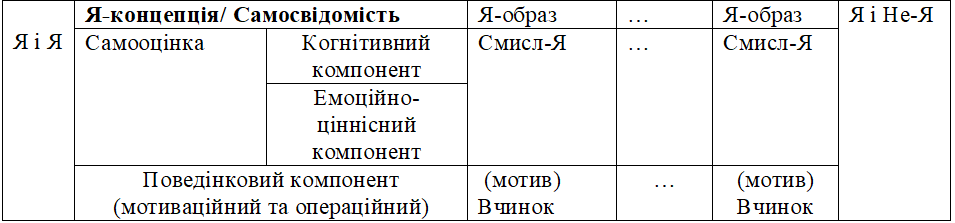

МОТИВАЦІЙНИЙ КОМПОНЕНТ У СТРУКТУРІ САМОСВІДОМОСТІ ОСОБИСТОСТІ
MOTIVATIONAL COMPONENT IN THE STRUCTURE OF SELF-CONSCIOUSNESS
In article, scientific approaches to definition of structure and level construction of self-consciousness of personality are generalized and systematized. The content and place of motivational component in the structure of «I-concept» are opened. In the result of research, the schematic model of structural construction of «I-concept», as a product of self-consciousness of personality, is made. In this work is indicated on the necessity of determination in the concrete scientific concepts of clear laws of co-operation of motivational sphere and consciousness of personality for further researches. Key words: self-consciousness, I-concept, self-image, self-knowledge, self-relation, self-regulation, self-actualization, motive, sense-I.
Актуальність. Однією з основних ознак життя сучасної людини є стрімкість змін, що виникають на всіх рівнях функціонування суспільства. Все проникаючий динамізм відображається на особливостях взаємодії особистості із навколишнім світом та з собою, встановлюючи високі вимоги до її саморозуміння. Тому на сучасному етапі в психологічній науці одною з актуальних є проблема розвитку самосвідомості як важливішої складової особистості. Являючись ядром особистості, самосвідомість здійснює регулюючий вплив на всі сторони життєдіяльності людини. Спираючись на самосвідомість людина прагне зробити для себе доступними мотиви та результати своїх вчинків та зрозуміти, якою вона є на справді, оцінити себе.
Постановка проблеми. Багато років психологи розглядають проблему самосвідомості з різних точок зору, будують нові теорії та структури досліджень. У вітчизняній психології вивченню самосвідомості присвячена велика кількість робіт таких видатних психологів як Б.Г.Ананьєв, О.О.Бодальов, Л.І.Божович, Л.С.Виготський, І.С.Кон, С.Л.Рубінштейн, В.В.Столін, І.І.Чеснокова та ін. Серед іноземних психологів найбільший внесок у розвиток цієї проблематики зробили Р.Бернс, У.Джемс, Е.Еріксон, А.Маслоу, Г.Олпорт, К.Роджерс, В.Франкл, З.Фрейд, К.Хорні та ін.
В сучасній психології дослідження проблеми самосвідомості характеризуються своєю багатовекторністю, але в рамках завдань, поставлених в цій статті, важливо виділити дослідження, які спрямовані на визначення ролі мотиваційно-ціннісної сфери у процесах самосвідомості особистості (П.В.Макаренко, К.О. Міхно, К.О.Островська та ін.).
Дослідники самосвідомості останнього десятиліття (М.О.Антонець, І.Д.Бех, О.М.Васильченко, П.В.Макаренко, Я.В.Мацегора, Г.І.Меднікова, О.Я.Надибська, Г.М.Свіденська, Л.П.Чепіга, В.О.Швидкий та ін.), у своїх наукових працях розглядають різноманітні аспекти проблеми самосвідомості, її структурних компонентів, але й досі єдиної думки з приводу сфери реалізації останніх немає, особливо це стосується мотиваційного компоненту.
Мета даної статті – теоретичний аналіз, узагальнення та систематизація основних досліджень самосвідомості, які розкривають її зміст через структуру та рівневу будову, визначення місця мотиваційного компоненту в структурі «Я-концепції» особистості.
Самосвідомість як важливий структурний компонент особистості є тим внутрішнім механізмом, завдяки якому людина здатна не тільки свідомо сприймати дію навколишнього середовища, але і самостійно, усвідомлюючи свої можливості, визначати міру та характер особистої активності. В результаті людина не тільки може відображати зовнішній світ, але, виділивши себе в ньому, пізнавати і свій внутрішній світ, переживати його і певним чином ставитися до себе. Самосвідомість, з одного боку, як би фіксує підсумок психічного розвитку особистості на певних етапах її існування, а з іншого боку, в якості внутрішнього усвідомленого регулятора поведінки самосвідомість впливає на подальший розвиток особистості. Вона одне з істотних умов безперервності розвитку особистості, рівновага, яка встановлюється між зовнішніми впливами, внутрішнім станом особистості і формами її поведінки [17].
В умовах сьогодення основні дослідження самосвідомості згруповані навколо її структури та рівневої будови. Так, вивчаючи проблему самосвідомості, Л.С.Виготський зупиняється на шести напрямках, які характеризують її структуру: накопичення знань про себе, зростання їх зв'язності і обґрунтованості; поглиблення знань про себе, психологізація (поступове входження в образ уявлень про власний внутрішній світ); інтеграція (усвідомлення себе єдиним цілим); усвідомлення власної індивідуальності; розвиток внутрішніх моральних критеріїв при оцінюванні себе, своєї особистості, які запозичуються з об'єктивної культури; розвиток індивідуальних особливостей процесів самосвідомості [4].
Власну психологічну модель самосвідомості особистості створила О.А. Бєлобрикіна. Її модель відображає сутнісні характеристики самосвідомості і самосмислової сфери особистості та динаміку їх розвитку. Відчуття самототожності складає базис розвитку самосвідомості і самосмислової сфери особистості. Також О.А. Бєлобрикіною виділені психологічні утворення (підструктури) самосвідомості (емоціонально-оцінюючий компонент; вольовий компонент; когнітивний) і самосмислової сфери особистості (первинний (цілісний) образ Я; спільна самооцінка; первинна Я-концепція; часткова самооцінка; сукупність Я-образів (їх диференціація, змістовно-смислове насичення, рухливість, пластичність і ієрархія); глобальна Я-концепція; самосвідомість) [2].
В.С. Мухіна розуміє самосвідомість як універсальну, таку, що історично склалася, і соціально обумовлену психологічно значиму структуру, що властива кожному соціалізованому індивіду. Ця структура містить ланки, що складають вміст ключових переживань особистості і виступають внутрішніми чинниками рефлексії, ставлення особистості до самої себе і навколишнього світу. В.С. Мухіна виділяє п'ять ланок структури самосвідомості: 1 — ідентифікація з ім'ям і із замінюючим його займенником «Я», з образом тіла, індивідуальна духовна сутність людини; 2 — прагнення до визнання; 3 — статева ідентифікація; 4 — психологічний час особистості (індивідуальне минуле, сьогодення, майбутнє, а також історичне минуле, сьогодення, майбутнє свого етносу); 5 — соціальний простір особистості (права і обов'язки). Автор вважає, що ланки самосвідомості формуються у всіх людей, незалежно від приналежності до певного етносу, розрізняючись в змістовному наповненні ланок самосвідомості залежно від характеристик етнічного середовища і від соціальної ситуації розвитку. Цінності, що входять до змісту структурних ланок самосвідомості, переживаються людиною як унікальні особистісні потреби [7].
Л.Д. Олійник, аналізуючи структуру самосвідомості, виділяє шість її складових: самопочуття, самопізнання, самооцінку, самокритичність, самоконтроль і саморегуляцію [10].
М.Й. Боришевський розуміє самосвідомість особистості як складне утворення, структура якого складається з таких взаємозалежних одиниць як самооцінка, домагання, соціально-психологічні очікування й образ «Я». Крім того, він зазначає, що образ «Я» є тим своєрідним каркасом, який служить особистості основою для вибору певної лінії поведінки, виступаючи при цьому як узагальнений глобальний механізм саморегуляції поведінки на особистісному рівні, який забезпечує почуття ідентичності, самототожності людини [3].
В.С. Мерлiн, визначаючи самосвідомість як складне синтетичне утворення, виділяє такі його компоненти як свідомість «Я», свідомість тотожності або самість, усвідомлення своїх психічних властивостей і самооцінки, соціально-моральну самооцінку. Усі компоненти самосвідомості перебувають у генетичному й функціональному зв’язку, утворюють цілісну структуру, специфіку якої, B.C. Мерлін , визначає загальною спрямованістю особистості, під якою він розуміє її мотиваційну сферу. Тобто, самосвідомість, згідно B.C. Мерліна, в остаточному підсумку визначається системою мотивів, що формуються й проявляються в діяльності людини. Система мотивів, що виражається в спрямованості особистості, генетично первинна, а самосвідомість вторинна [6].
За концепцією, розробленою О.М. Леонтьєвим, одиницями структури самосвідомості являються особистісні смисли. Своє походження особистісний смисл отримав завдяки процесам реального життя поза свідомістю. Але у структурі свідомості особистісний смисл вступає в нові зв’язки, пов’язані з іншими складовими свідомості, та проявляє себе в знаннях та емоціях [5].
Розгляд смислу «Я» у контексті самосвідомості особистості продовжив В.В. Столін. Він пояснює, що смисл «Я» виникає як ставлення до мотиву або мети релевантних їх досягненню якостей суб’єкта і оформлюється у самосвідомості в значеннях та емоціях. Смисл «Я» є одиницею самосвідомості. Як одиниця самосвідомості смисл «Я» містить когнітивний, емоційний елементи та елемент ставлення. Він пов’язаний з активністю суб’єкта, тобто з його соціальною діяльністю. Конфліктний смисл «Я» - це відображення зіткнень різноманітних життєвих відношень суб’єкта, зіткнень його мотивів та діяльностей. Це зіткнення здійснюється шляхом вчинків, які, таким чином, являються початком формування суперечливого ставлення до себе. В свою чергу, смисл «Я» запускає подальшу роботу самосвідомості, яка проходить в когнітивній та емоціональний сферах [15].
І.І. Чеснокова вважає, що в структурному відношенні самосвідомість можна охарактеризувати як єдність трьох сторін – пізнавальної (самопізнання), емоційно-ціннісної (самовідношення) і дієво-вольової, регулятивної (саморегуляція). І.І. Чеснокова виділяє три компоненти самосвідомості: самопізнання, емоційно-ціннісне ставлення й саморегуляція поведінки суб’єкта [19].
О.Т. Соколова також визначає, що «самосвідомість, розглянута з боку своєї структури, являє собою настановне утворення, що складається із трьох компонентів – когнітивного, афективного й поведінкового, які мають відносно незалежну логіку розвитку, однак у своєму реальному функціонуванні виявляють взаємозв’язок [13, С.7].
Практично аналогічно описує структуру самосвідомості П.Р. Чамата. Він зазначає, що самосвідомість має три основні форми прояву: пізнавальну, емоційну й вольову [18].
А.О. Деркач із співавторами в структурі самосвідомості, окрім когнітивного, емоційного і операціонального (поведінкового), виділяють і мотиваційний компонент. І якщо когнітивний компонент реалізується в самопізнанні; емоційний – у саморозумінні; операціональний - у саморегуляції, то мотиваційний реалізується в процесі самоактуалізації [16].
Багатьма психологами структура самосвідомості розглядається із залученням вже визначеного нами поняття «Я-концепції».
С.М. Петрова визначає, що Я-концепція включає в себе результати пізнавальної діяльності не тільки самого себе, але й інших людей. Вона виділяє в структурі «Я-концепції» наступні складові: 1) описова (знання про себе), яка називається образом «Я»; 2) оціночна (самовідношення), емоційно зумовлена оцінка уявлень про себе; 3) поведінкова – конкретні дії, поведінкові реакції, які виникають як наслідок самооцінки та образу «Я» [11].
У своїх дослідженнях Т. Шибутані зупиняється на конвенціальних категоріях, з яких складається «Я-концепція», та за допомогою яких людина визначає сама себе, а саме: вікова група, стать, вид діяльності, етична група та соціальний клас [20].
Цікавою є позиція представників когнітивного підходу, які вважають «Я-концепцію» не певною монолітною сутністю, а швидше системою внутрішніх ідентичностей, або схем «Я», що надають структуру та смисл «Я» релевантному досвіду індивіда. Схеми «Я», на думку Х. Маркуса та П. Нуріус, тісно пов'язані з мотивацією та поведінкою індивіда, оскільки схема «Я» – не просто інтеграція минулих та теперішніх дій. Це заява про свою відповідальність за майбутню поведінку в певній сфері [21].
А.А. Налчаджян пропонує узагальнену схему «Я-концепції» як структури самосвідомості, у якій центральне місце приділяється «Я» – організуючій, інтегруючій й регулюючій інстанції особистості. У «Я-концепцію» А.А. Налчаджян включає наступні підструктури – «Я-образи», які в свою чергу складаються з елементів, когнітивно-емоціональних комплексів: образ тіла («тілесне Я»), «наявне» або «теперішнє Я», «динамічне Я», «фактичне Я», «майбутнє» або «ймовірне Я», «ідеалізоване Я» та «уявне Я». Крім того автором виділяється «фальшиве Я», у яке може перетворитися кожна з підструктур «Я-концепції», хоча найчастіше спотворюється «наявне» або «актуальне Я». Крім стійких «Я-образів», що сформувалися у ході онтогенезу, у структуру самосвідомості входять ситуативні (оперативні, динамічні) «Я-образи», які виражають активність особистості, її самосвідомості в різних ситуаціях, при цьому в нормі у людини виникає такий ситуативний «Я-образ», який відповідає (або функціонально адекватний) саме для даного процесу адаптації у відповідній конкретній ситуації. Між «Я-образами» часто формуються конфліктні відношення, які приводять до змін «Я-концепції» та особистості в цілому [8].
В.С. Агапов, І.В. Баришнікова та О.В. Іващенко визначають, що структура «Я-концепції» будується на наступних підставах: «Я – концепція» як багатовимірна соціальна установка на себе («Реальне Я», «Ідеальне Я», «Дзеркальне Я» та ін.), як ступені креативності («Вище Я», «Творче Я», «Унікальне Я», «Сутністне Я», «Глибинне Я», «Духовне Я» та ін.), як можливості змін («Стійке Я», «Периферійне Я», «Гнучке Я», «Ядерне Я»), як дихотомії («Я, яке бажає» – «Я, яке повинно», «Я, яке бажає» – «Я Реальне», «Усвідомлене Я» - «Неусвідомлене Я» та ін.), як інтегративні фактори («Особистісне Я» та «Інтегральне Я»), як об’єктивні складові («Необхідне Я», «Потенційне Я», «Можливе Я», «Перцептивне Я»), як топологічні образи «Я» («те, що належить Я» - проявлення кордонів «Я», та «те, що належить Не-Я» - проявлення «Я», як «Не – Я» для іншого) та як детермінанти («Я-Теперішнє», «Я-Майбутнє» та «Я-Минуле») [1, С.75-82].
О.Г. Спіркін теж зазначає, що існують різні форми уявлень про себе: диференційовані або за сферою проявів людини («соціальне Я», «духовне Я», «фізичне Я», «інтимне Я», «публічне Я», «моральне Я», «сімейне Я» тощо), або як реальність і ідеал («реальне Я», «ідеальне Я»), або на часовому континуумі («Я у минулому», «Я в сьогоденні»), або за якоюсь іншою істотною ознакою. Кількість таких «Я-образів» і їх зміст визначаються, як правило, на основі теоретичних міркувань [14]. Загальновизнано, що самосвідомість становить собою вельми складне психічне утворення, яке містить низку структурних одиниць. Але, як ми бачимо, стосовно компонентів та підструктур, що входять до структури самосвідомості, погляди різних дослідників не завжди збігаються.
Описані варіанти структури самосвідомості можна, на наш погляд, охарактеризувати як структурно-функціональні, тому що поряд зі структурою (через компоненти підструктур – когнітивної, емоційно-ціннісної та поведінкової) їх автори розглядають особливості функціонування самосвідомості (самопізнання, самовідношення, самоактуалізація та саморегуляція). Крім того в психології розроблені вертикальні рівневі моделі структури самосвідомості. У даних моделях рівні самосвідомості представляються у вигляді ієрархічної системи й збігаються з фазами її розвитку в онтогенезі.
Тому для того, щоб розглянути будову самосвідомості більш детальніше, необхідно звернутися до її рівневих концепцій, викладених у дослідженнях вітчизняних і зарубіжних психологів.
С.Л. Рубінштейн вважав, що розвиток самосвідомості проходить через декілька рівнів – від простого нерозуміння відносно самого себе до усе більш поглибленого самопізнання, що поєднується потім з усе більш визначеною самооцінкою, яка час від часу може коливатися. Він відводить самосвідомості одне з найголовніших місць в дослідженні особистості [12].
О.О. Бодальов і В.В. Столін також вважають, що самосвідомість має рівневу структуру, яка обумовлюється рівнями активності людини й забезпеченістю цих рівнів самосвідомості. На рівні організму активність суб'єкта викликається потребами в самозбереженні, фізичному благополуччі організму. На рівні організму формується самопочуття суб'єкта, що є біологічним аналогом самовідношення. На рівні соціального індивіда активність підпорядкована потребі в приналежності людини до спільності, у визнанні його цією спільністю. Ця активність регулюється соціальними нормами, які засвоюються індивідом. На рівні особистості активність суб'єкта викликається потребою в самореалізації і реалізується з опорою на власні можливості й мотиви. Основою самовідношення стає потреба в самоактуалізації. «Власне Я», відповідні риси і якості, оцінюються у відношенні до мотивів, що виражають потребу в самореалізації, і розглядаються як її умова [9].
Відповідно до цих рівнів, можна розрізнити й зазначені вже нами одиниці самосвідомості. На рівні органічної самосвідомості така одиниця має сенсорно-перцептивну природу. На рівні індивідної самосвідомості – являє собою сприйняту оцінку себе іншими людьми й відповідну самооцінку, свою вікову, статеву й соціальну ідентичність. На рівні особистісної самосвідомості такою одиницею є конфліктний смисл, зіткнення у вчинку одних особистісних якостей з іншими, що прояснює для особистості значення її ж властивостей і сигналізує про це у формі емоційно-ціннісного ставлення до себе [9].
І.І. Чеснокова пропонує розрізняти два рівні самосвідомості залежно від тих меж, у яких відбувається співвіднесення знань про себе. На першому рівні таке співвіднесення відбувається в межах зіставлення «Я» та «Не-Я». На другому рівні співвіднесення знань про себе відбувається у процесі аутокомунікації, тобто в рамках «Я» і «Я» [19].
За результатами аналізу поглядів дослідників на динамічну структуру самосвідомості, можна зробити такі висновки.
1. Основними компонентами «Я-концепції» особистості як продукту самосвідомості, яка в свою чергу складається з «Я-образів», що супроводжують та формують її динаміку, є: когнітивний; емоційно-ціннісний; мотиваційний та операційний в складі поведінкового (див. рис. 1.).
2. Змістовне наповнення самосвідомості, відбувається у процесі самопізнання (когнітивний компонент), самовідношення (емоційно-ціннісний компонент), самоактуалізації та саморегуляції (мотиваційний та операційний в складі поведінкового) у взаємодії та взаємовідношенні у системі «Я і Не-Я», з одного боку, та «Я і Я», з іншого.
3. «Я - образи» складаються з елементів, певних смислів «Я», які пов’язані з соціальною діяльністю та інтегровані в когнітивній та емоційно-цінністній сферах, які в свою чергу поєднуються в таке особливе утворення самосвідомості особистості, як її самооцінка.
4. Самосвідомість визначається системою мотивів, що формуються й проявляються в діяльності людини. Система мотивів, що виражається в спрямованості особистості, генетично первинна, а самосвідомість вторинна.
Проведений аналіз зумовлює необхідність продовження даної роботи у напрямку визначення в конкретних наукових поняттях чітких закономірностей взаємодії мотиваційної сфери та самосвідомості особистості.
Список використаної літератури.
1. Агапов В.С. Я-концепция личности в отечественной психологии / Агапов В.С., Иващенко А.В., Барышникова И.В. – М.: МГСА, 2000. – 155с.
2. Белобрыкина О.А. Психологические условия и факторы развития самооценки личности на ранних этапах онто- и социогенеза: дис. … кандидата психол. наук : 19.00.01 / Белобрыкина Ольга Альфонсасовна. - Новосибирск, 2000. – 368 с.
3. Боришевский М.И. Развитие саморегуляции поведения школьников: Дис. в форме науч. доклада … доктора психол. наук : 19.00.07 / Боришевский Мирослав Иосифович. – К., 1992. - 77с
4. Выготский Л.С. История развития высших психических функций : собр. соч.: в 6 т. / Выготский Л.С. - М.: Педагогика, 1984. - Т.3. - 313 с.
5. Леонтьев А.Н. Деятельность. Сознание. Личность / А.Н. Леонтьев. – М.: Политиздат, 1975. – 368с.
6. Мерлин В.С. Психология индивидуальности: избранные психологические труды / В.С. Мерлин / под ред. Е.А. Климова. – М.; Воронеж: Институт практической психологии: МОДЭК, 1996. – 446 с.
7. Мухина В.С. Феноменология развития и бытия личности. / В.С. Мухина – М.; Воронеж: Института практической психологии: МОДЭК, 1999. – 180 с.
8. Налчаджян А.А. Социально-психическая адаптация личности (формы, механизмы и стратегии) /А.А. Налчаджя?н. - Ереван: Изд-во АН Арм. ССР, 1988. - 263 с.
9. Общая психодиагностика / под ред. Бодалева А.А., Столина В.В. – М.: Изд-во МГУ, 1987. – 304 с.
10. Олейник Л.Д. Индивидуальное самосознание и пути его формирования: автореф. дисс. на соиск. ученой степени… канд. филос. наук. / Л.Д. Олейник. – Л., 1974. – 25 с.
11. Петрова С.М. Мотивационная обусловленность Я-концепции личности в юношеском возрасте: дис. … кандидата психол. наук : 19.00.07 / Петрова Светлана Михайловна.- СПб.,1995. - 220с.
12. Рубинштейн С.Л. Самосознание личности и ее жизненный путь / С.Л. Рубинштейн // Основы общей психологии. – СПб.: Питер, 1998. – С. 634–644.
13. Соколова Е.Т. Самосознание и самооценка при аномалиях личности / Е.Т. Соколова. – М.: Изд-во Моск. ун-та, 1989. – 215 с.
14. Спиркин А.Г. Сознание и самосознание / А.Г. Спиркин.– М.: Политиздат,1972. – 471с.
15. Столин В.В. Самосознание личности / В.В, Столин. – М.: Изд-во Моск. ун-та, 1983. – 288 с
16. Технологии развития профессионального самосознания личности: Психолого-акмеологический практикум / Деркач А.А., Москаленко О.В., Пятин В.А., Селезнева Е.А. – Астрахань: Изд-во АГПУ, 2000. – 169 с.
17. Хухлаева О.В. Психология развития: молодость, зрелость, старость: [учеб. пособие для студ. высш. учеб. заведений] / О.В. Хухлаева. - М.: Издательский центр «Академия», 2002. - 208 с.
18. Чамата П.Р. Вопросы самосознания личности в советской психологии / П.Р. Чамата // Психологическая наука в СССР: В 2 т. / АПН РСФСР. – М., 1960. – Т. 2. – С. 91-110.
19. Чеснокова И.И. Проблема самосознания в психологии / И.И. Чеснокова. – М.: Наука, 1977. – 144 с.20.
20. Шибутани Т. Социальная психология / Т. Шибутани; пер. с англ. В.Б. Ольшанского. – Ростов н/Д. : Феникс, 1999. – 539 с.21.
21. Markus H., Nurius P. Possible Selves: The Interface between Motivation and the Self-Concept. In Yardley, K., Honess, T. (Eds). Self and Identity: Psychosocial Perspectives. Wiley, 1987.